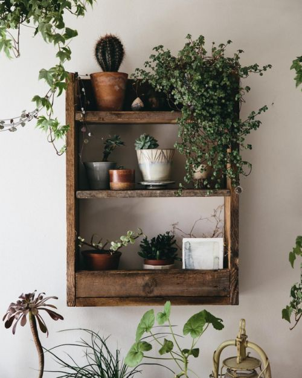
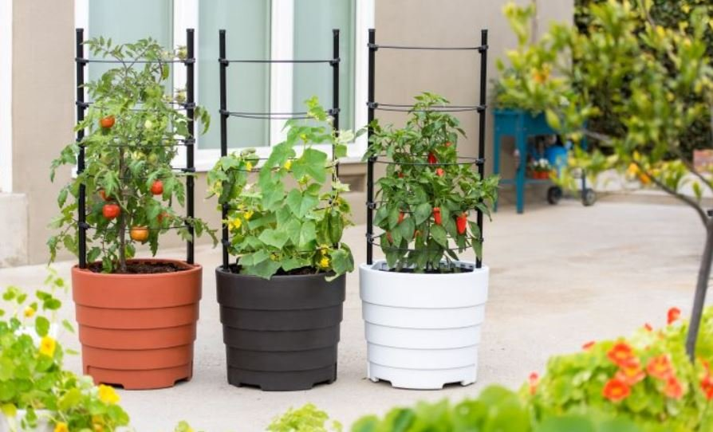
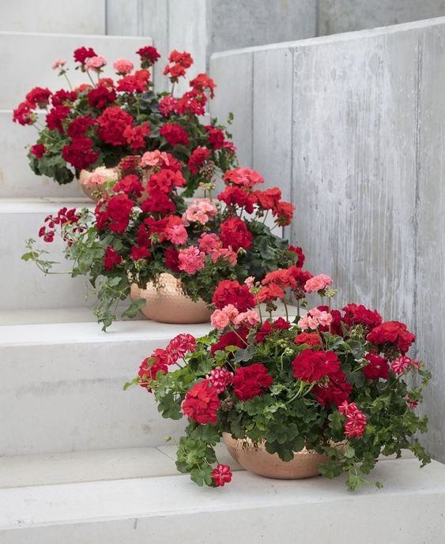
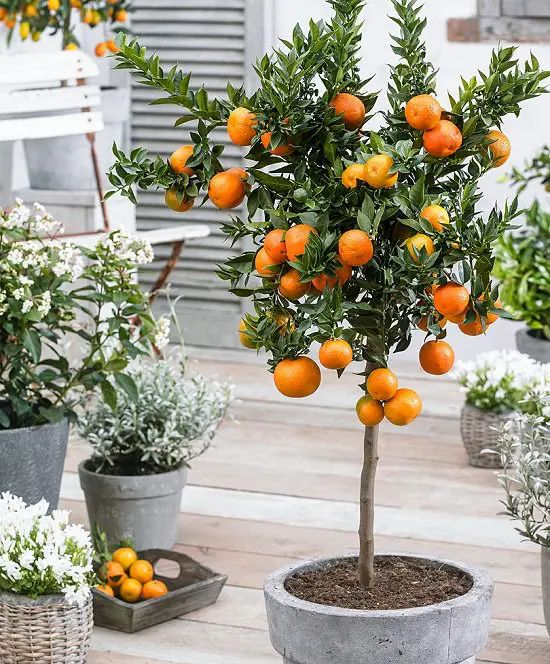

<div class="">
    <div class="row home">
      <div class="col pic">
        
        <div class="confused">
        <h1 class="cent">Are you confused How to grow a plant???</h1>
        <h2 class="cent1">We're here to teach you!!!</h2>
        <button class="btn btn-danger cent2 ">Explore here</button>
      </div>
      </div> 
    
      <div class="col word">
        
        
  
  
      </div>
    </div></div>
      <!-- <div class="container-fluid content">
        <div class="row ">
          <div class="col decor">
            <h1>Ornamental plants</h1>          
           <p>Ornamental plants are plants that are grown for decorative purposes in gardens and landscape design projects, as houseplants, cut flowers and specimen display. The cultivation of ornamental plants comes under floriculture and tree nurseries, which is a major branch of horticulture.</p>
           <a class="icons"href="" ><i class="far fa-arrow-alt-circle-right icon"></i> Explore more</a>

          </div>
            <div class="col-4 decor-pic">   
                      
            </div>
            </div>

            <div class="row">
              <div class="col-4 veg-pic ">
                     

                 </div>
                <div class="col veg">   
                  <h1>Vegetable plants</h1>     
                  <p>Vegetables are parts of plants that are consumed by humans or other animals as food. Vegetable plants collectively to refer to all edible plant matter, including the flowers, fruits, stems, leaves, roots, and seeds.</p>     
                  <a class="icons"href="" ><i class="far fa-arrow-alt-circle-right icon"></i> Explore more</a>

                </div>
            
            </div>

          <div class="row">
            <div class="col-8 flower">
              <h1>Flowering plants</h1> 
              <p>Flowering plants are a type of vascular plant that produces flowers in order to reproduce. Flowering plants produce seeds within a fruit. The scientific name for flowering plants is angiosperms. Flowering plants follow a specific life cycle.Flowering plants are the most diverse group of land plants.</p>         
              <a class="icons"href="" ><i class="far fa-arrow-alt-circle-right icon"></i> Explore more</a>

            </div>
              <div class="col-4 flower-pic">   
                    
  
              </div>
              </div>

              <div class="row">
                <div class="col-4 fruit-pic ">
                       
  
                   </div>
                  <div class="col fruit">   
                    <h1>Fruit trees</h1>     
                     <p>A fruit tree is a tree which bears fruit that is consumed or used by animals and humans — all trees that are flowering plants produce fruit, which are the ripened ovaries of flowers containing one or more seeds. In horticultural usage, the term "fruit tree" is limited to those that provide fruit for human food.</p>              
                     <a class="icons"href="" ><i class="far fa-arrow-alt-circle-right icon"></i> Explore more</a>
                  
                    </div>
              
              </div>
         
      </div> -->

      
    
  